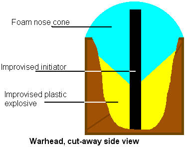
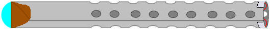

This month's oddball tip:
Burn your trash- Even if you don't have a good cross-cut shredder, you can protect your privacy. Burn sensitive correspondence, out financial statements, and personal papers. A large coffee can is fine if you burn your stuff every few days. Punch some air holes along the base of can for an efficient burn. When the burn is completed, stir the ashes to break them up. Glazed paper especially can leave large readable ashes.

Buy my book!
Rocket-Propelled Whatsit:: Part 3 of 4
I feel obligated to point out for the clueless that building an RPG is dangerous, and extremely illegal in many places. Some of the materials are unstable. You can't even store some it for more than a few weeks. Don't build one on a lark. It isn't a toy. You could kill yourself or an innocent bystander. When things go right, this design isn't even extemely accurate.
If you must try this out to verify that it works, and that your skills are up to it, be careful.
Otherwise just file this information in the "open in emergency only," war-just-broke-out cabinet.
Warhead
This is an attempt at improvising a shaped-charge warhead. I don't promise the effect will work, but it doesn't hurt to try.
Warhead
Start by half filling the cardboard tube with your improvised plastic explosive. Press it in so the plastic rides up the sides of the tube to make a concave cone. This shape is what ought to give the shaped-charge effect.
Now take your foam block and carve it into a cylinder. Then carve the bottom into a cone shape to match the plastic explosive. Round off or point the top; this is your rocket's nose cone, and helps hold the plastic explosive in place. Cut a small hole (try pushing a pencil through the foam) in this lengthwise from nose cone point to base. Set this into place over the plastic explosive and tape it down.
Detonator
The whatsit is supposed to be impact detonated, which is why the acetone peroxide; the stuff is impact and heat sensitive.
Cap one end of your little metal tube with some epoxy putty.
Instead of dumping your AP directly into the tube, make a little plastic wrap cylinder of the stuff, then slide it into the tube. Yes, this is a tiny pipe bomb. Be careful.
Cap the remaining open end of the tube.
You could slide the detonator down the hole in the foam nose cone now, but for safety's sake don't until your ready to fire the rocket. Your warhead is construct like this:

Install the warhead in the rocket by pouring a bead of glue around the warhead's cardboard tube, then sliding into the rocket fuselage in front of the motor.

You're finished. When you're ready to fire, stick the detonator into the nose cone, seating firmly into the plastic explosive. Slide the rocket into next month's launcher, aim, shoot.
Next month: Launcher
Letters:
Blow Guns and Darts
Rating = Excellent
General Comments = im a bad kid who hates nabors cat need an easy to make poison without using hores shit
I really think you should read that article again. With a little luck, you might figure out why asking me for a poison recipe is really stupid.
More Spooner columns
Send questions to:
The Improv
Encrypted mail preferred.
Please use my PGP public key.
Unless requested otherwise, all letters may appear in Doing Freedom!.
|
Support The Improv with an e-gold donation

|
-----BEGIN PGP PUBLIC KEY BLOCK-----
Version: PGPfreeware 6.5.8 for non-commercial use
mQGiBDjOdmcRBAD+7JYVs1aTC4ebMknplBSPLl/zYOjoc1g7vnpKw1eGoNIfgYwu
ew6J2TsMbfnIa6G5QYJ/K6NhRicLJdb7pgwoOXBTBwJKlHQqOB3BC3n7UBeuxHbm
CHVGvql9miEF0bYULnhQUbKyV/KezM1X0wBcDkjkTQOjYyiJY2vZEfP7DQCg/x+B
oGxZSYWgdv6BuvWA3YXT7IcEANmBz0llMEhWMDiICoPQxsGwPbaGYFsa8VMvD8eV
IKgw8kk91Zh9Nui/04XqMVUX+NnVhbPNi93HFeJcGU8XZ/VEBSId8+uUcNlAeRZX
TdIml5CZUrPRPPTM0bRWhqkm5nnTpwUJGoxJap2yzSIm7ncDJEF2tzHb0ypsFcmr
VAqVBACR5WvGnfzGlOIgGzB8Ebtvysyrqlp+U0SxEOACVNlE66pW8BkBmAOCQd82
/I8JohpafMwEbCvnBeqbBUs6K69FoOqeTTx5KUeWsctzhJQACze4HlQAS9f5V0Qm
oPlR8P3DmzbwBej22+ov6c5W1AtFpsvhESHYvzQqdzew/KEJA7QiVG9tIFNwb29u
ZXIgPGltcHJvdkBtYWlsdmF1bHQuY29tPokASwQQEQIACwUCPjF5jgQLAwIBAAoJ
EBPxgQhFCV1R8sEAnRBpAw6IFJ2PA/dQujHYWWl2zZICAKDi2tPJ5UFvBjRS/+GL
EOFbXVru9LQkVG9tIFNwb29uZXIgPGltcHJvdl9kZkBncmFmZml0aS5uZXQ+iQBL
BBARAgALBQI/MnRYBAsDAgEACgkQE/GBCEUJXVHEQwCeIo/uLZ9XkF21AqywlxAa
tIAaQdIAn0ejXGcXmhQ5v8lKmTxLl8dFwxZxuQQNBD4k+OAQEAD5GKB+WgZhekOQ
ldwFbIeG7GHszUUfDtjgo3nGydx6C6zkP+NGlLYwSlPXfAIWSIC1FeUpmamfB3TT
/+OhxZYgTphluNgN7hBdq7YXHFHYUMoiV0MpvpXoVis4eFwL2/hMTdXjqkbM+84X
6CqdFGHjhKlP0YOEqHm274+nQ0YIxswdd1ckOErixPDojhNnl06SE2H22+slDhf9
9pj3yHx5sHIdOHX79sFzxIMRJitDYMPj6NYK/aEoJguuqa6zZQ+iAFMBoHzWq6MS
HvoPKs4fdIRPyvMX86RA6dfSd7ZCLQI2wSbLaF6dfJgJCo1+Le3kXXn11JJPmxiO
/CqnS3wy9kJXtwh/CBdyorrWqULzBej5UxE5T7bxbrlLOCDaAadWoxTpj0BV89AH
xstDqZSt90xkhkn4DIO9ZekX1KHTUPj1WV/cdlJPPT2N286Z4VeSWc39uK50T8X8
dryDxUcwYc58yWb/Ffm7/ZFexwGq01uejaClcjrUGvC/RgBYK+X0iP1YTknbzSC0
neSRBzZrM2w4DUUdD3yIsxx8Wy2O9vPJI8BD8KVbGI2Ou1WMuF040zT9fBdXQ6Md
GGzeMyEstSr/POGxKUAYEY18hKcKctaGxAMZyAcpesqVDNmWn6vQClCbAkbTCD1m
pF1Bn5x8vYlLIhkmuquiXsNV6z3WFwACAg//WHI3f6iagPOGgxJKOHMW6uoHu6l5
/ZPLNc+HtOHMSikrTQUaCi1GTavS/wOswEBwL9tbWBbkfIsKvZztj2NtbBaLUffw
9aTc4C1+erlyxU5JNafwDx2cxzbuArzGaAmymBItwQOny98L7fakW/AKj1KnQk+n
LFLZej3IrxhveE8yPg+QCqzVhbg2Q1kMGXMLU3Rimyukscx+K+NyINdYEhovs+mn
TOCcFIKVmtKtqHGVF6v9rAHfcOR8PoNthj59HFVERvzEsDytgir7SnIqOSfDVIsP
LRFM7ZFFL2ugunFNHyrvaX4qFZ1DG1FGpvtO06Zw4LfMRTJ5ESJTL6YcBJAE9faI
XO6kJoPRQu/7tqfHTD5Jg+7DpSgIFfVUXO7FSv8kY2TkHRWY9DtrkeK/aM47dQFI
CiD0D4/QUtQR79HwHPtIANSO+fb5/foCgCLF3y5SGTj4lA81o0qBVgKZVW6AsdSy
dnfafxJUGa9/Tkc7mb5cmuBH5aS0lqNW/W5oGHdapKH+AvvSGwSOU8qXu4FpmiOF
ITM/8o1aViNpNEM9u3cXYf1uSbI/m1C9kNz2Jx7TzdvEZmjvZ8U0v4YboxzoYu/n
4yKQwSW74iohytmYJCHyIwh+V/r2gALQ6teE5+a/fraBTZtVKDPQrqLtpIyQrqUO
lIh3wxvreLtEMc+JAEYEGBECAAYFAj4mH9YACgkQE/GBCEUJXVGRegCfU+50Y+Ri
8N1uWJO5Y3PJplqLUk0AoJwH4foCSu84mX/RqkMSGQHjkXK8
=++DI
-----END PGP PUBLIC KEY BLOCK-----
Acetone Peroxide
60 Acetone
36 Hydrogen Peroxide (30% Concentration)
4 Sulfuric Acid (S.G 1.84)
Use Ice Bath!
Mix H2O2 and acetone. Cool to 5 degrees.
Drip in Sulfuric acid. Maintain low temperature.
Stir five minutes (to react mixture; watch temp).
Let sit until Acetone Peroxide precipitates out; several hours to a day. Watch temp.
Filter out precipitate, and rinse in baking soda solution until no bubbles appear.
Dry.
Short shelf life; use within ten days.
Improvised Plastic Explosive
- potassium chlorate (9 parts, by volume)
- zip-lock plastic bag
- petroleum jelly (1 part, by volume)
- nonmetallic mortar and pestle (wooden bowl and spoon)
1) Grind the potassium chlorate to a fine powder.
2) Place the powder into the plastic bag. Add the petroleum jelly.
3) Seal the bag, and knead the potassium chlorate and petroleum jelly into a sticky dough.
4) Remove the explosive from the bag and use. The explosive is best used within 24 hours, as the components gradually react to lower its force.
|